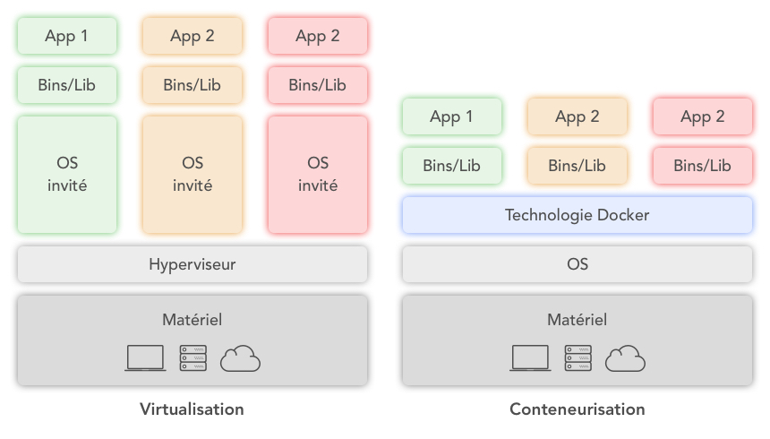

Docker
Déboguer votre application,
pas votre environnement
pas votre environnement
L'histoire de Docker
- 2010
L'histoire de Docker
- 2010
- janvier 2011
L'histoire de Docker
- 2010
- janvier 2011
- 2013
L'histoire de Docker
- 2010
- janvier 2011
- 2013
- juin 2014
L'histoire de Docker
- 2010
- janvier 2011
- 2013
- juin 2014
- octobre 2014
L'histoire de Docker
- 2010
- janvier 2011
- 2013
- juin 2014
- octobre 2014
- novembe 2014
L'histoire de Docker
- 2010
- janvier 2011
- 2013
- juin 2014
- octobre 2014
- novembe 2014
- décembre 2014
Docker en chiffres
Selon les créateurs de Docker
- 3,5 millions d’applications containerisées
- 37 milliards d’applications téléchargées
RightScale estime que l’adoption de Docker
- a augmenté de 35% en 2017
- a augmenté de 49% en 2018
Les avantages de Docker
Parlez vous Docker ?
- Dockerfile
- Registry
- Image
- Container
Dockerfile
c'est un document texte qui contient toutes les commandes que l'on pourrait executer via le shell pour créer son environnement.
Dockerfile exemple
FROM alpine:latest
ENV HELLO_MSG="Welcome in Docker"
CMD ["/usr/bin/echo", "$HELLO_MSG"]
Registry
La registry est une application côté serveur, hautement évolutive qui stocke les images Docker et vous permet d'y accéder.
Image
Une image est créée via un Dockerfile.
Chaque fichier image est composé d'une série de couches.
Chaque fois qu'une commande, comme RUN ou COPY, est executée une nouvelle couche se crée.
Container
Un Container est une copie d'une image.
Il permet d'isoler chaque service qui peut être exécuté de façon indépendante dans son conteneur dédié.
Ce Container ne contient que les dépendances nécessaires.